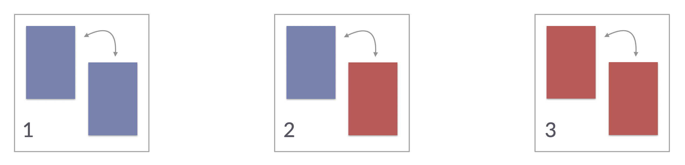
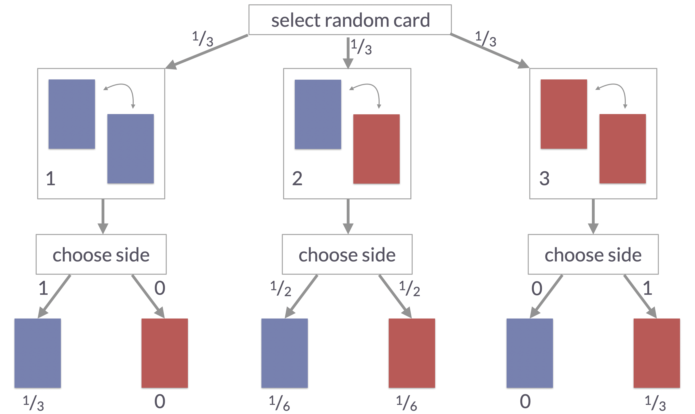

Building Bayesian intuitions: Sampling from models of the data-generating process
Bayesian regression: theory & practice
Author
Michael Franke
Preamble
Here is code to load (and if necessary, install) required packages, and to set some global options (for plotting and efficient fitting of Bayesian models).
Toggle code
# install packages from CRAN (unless installed)pckgs_needed <-c("tidyverse","brms","rstan","rstanarm","remotes","tidybayes","bridgesampling","shinystan","mgcv")pckgs_installed <-installed.packages()[,"Package"]pckgs_2_install <- pckgs_needed[!(pckgs_needed %in% pckgs_installed)]if(length(pckgs_2_install)) {install.packages(pckgs_2_install)} # install additional packages from GitHub (unless installed)if (!"aida"%in% pckgs_installed) { remotes::install_github("michael-franke/aida-package")}if (!"faintr"%in% pckgs_installed) { remotes::install_github("michael-franke/faintr")}if (!"cspplot"%in% pckgs_installed) { remotes::install_github("CogSciPrag/cspplot")}# load the required packagesx <-lapply(pckgs_needed, library, character.only =TRUE)library(aida)library(faintr)library(cspplot)# these options help Stan run fasteroptions(mc.cores = parallel::detectCores())# use the CSP-theme for plottingtheme_set(theme_csp())# global color scheme from CSPproject_colors = cspplot::list_colors() |>pull(hex)# names(project_colors) <- cspplot::list_colors() |> pull(name)# setting theme colors globallyscale_colour_discrete <-function(...) {scale_colour_manual(..., values = project_colors)}scale_fill_discrete <-function(...) {scale_fill_manual(..., values = project_colors)}
The three-card problem
The three-card problem is a well-known probability puzzle. It is similar to the Monty Hall Problem, but simpler. Here is how it goes.
There are three cards. One is blue on both sides. A second is blue on one side and red on the other. A third is red on both sides.

The three cards in the three-cards problem
Now, imagine that someone selects one of the three cards at random and then selects a random side of that card for you to see. Suppose that you see a blue side of a card. What’s the probability that the other side of that card is also blue?
Many people tend to answer this question with \(0.5\), but the true probability is \(\frac{2}{3}\). To see this, we explicate the two-step data-generating process: what you see (the observed data, i.e., one side of the card), is determined by two chance events along the way. A picture of this process, together with the path probabilities for each way a single round of playing this game could turn out, is shown below. It tells us that there are only two ways of generating the observation “blue side”: one from the blue-blue card, the other from the blue-red card. But the former is twice as likely to generate the observation we made, so the probability that the other side of a card, whose blue side we saw, being blue as well is \(\frac{2}{3}\). A longer treatment of the three-cards problem, also including an introduction to probability and Bayes rule, is here.

Data-generating process in the three-cards problem
Here is the three-card problem implemented in WebPPL:
// three cards; with blue or red on either side
var cards = [["blue", "blue"],
["blue", "red"],
["red", "red"]]
// non-normalized prior weights for each card
var prior_cards = [1, 1, 1]
// data-generating model (sampling based)
var model = function() {
var card = categorical({ps: prior_cards, vs: cards})
var color = uniformDraw(card)
condition(color == "blue")
return card.join("-")
}
// use 'enumerate' to compute the posterior
var posterior_cards = Infer(
{method: "enumerate",
model: model
}
)
// display the results
display(posterior_cards)
// other output formats
// print(posterior_cards)
// viz(posterior_cards)
// viz.table(posterior_cards)
Exercise 1
Try to figure out (roughly) how the code above works. Do not worry about how exactly the Infer() or the condition() function works. Everything else should be reasonably intuitive.
Try out the different output formats suggested in the commented-out part of the code above.
Change the priors prior_cards for drawing each card. Make a mental prediction of how that will affect the posterior before you run the code. Was your prediction correct?
Inferring a coin-flip bias
This example looks at a case where we infer a single latent continuous parameter. We flipped a coin \(N\) times and observed \(k\) successes (heads). The coin has unknown bias \(\theta \in [0;1]\), which represents the probability of a single flip landing heads. We want to infer \(\theta\) from the data.
We start with a Beta distribution to model the prior over \(\theta\). A uniform distribution over the unit interval is given by beta(1,1).
// observed data
var k_obs = 7 // number of observed heads
var N = 24 // total number of coin flips
// data-generating process
var model = function() {
// prior
var theta = beta({a:1, b:1})
// likelihood function
var k = binomial({p: theta, n: N})
// conditioning (to calculate posterior)
condition(k == k_obs)
return theta
}
var posterior = Infer(
{model: model,
method: "rejection",
samples: 5000}
)
viz(posterior)
Exercise 2
Comment out the conditioning statement condition(k == k_obs). What is it that you are visualizing now?
Solution
Now you are plotting samples from the prior. The true prior for betat(1,1) is a straight horizontal line, but for finite samples this will always look ragged, especially towards the end of the intervals.
Make changes to the weights of the beta-prior. Visualize the prior, then predict how it will affect the posterior.
Change the data and explore the effects on prior and posterior. For example, use \(k=70\) and \(N=240\). Again, try to make predictions about what will happen to hone your Bayesian intuitions.
The Big Bayesian 4
Given a Bayesian model of a data-generating process, and some data which is supposed to be explained or predicted, there are usually four things that we are interested in:
The model’s priors, i.e., the distribution of the parameters before updating with the data.
The model’s prior predictives, i.e., the predictions about likely data observations the model makes ex ante, that is before updating with the data.
The model’s posteriors, i.e., the distribution of the parameters after updating with the data.
The model’s posterior predictives, i.e., the predictions about likely data observations the model makes ex post, that is after updating with the data.
All of these qualities can be approximated from samples. Here is an example that shows the Big Bayesian 4 for the case of uncertainty about a coin’s bias.
// observed data
var k_obs = 7 // number of observed heads
var N = 24 // total number of coin flips
// define prior distribution
var PriorDistribution = Beta({a: 1, b: 1});
// data-generating process
var model = function() {
// prior sample
var theta_prior = sample(PriorDistribution)
// prior predictive
var k_prior = binomial({p: theta_prior, n: N})
// posterior sample
var theta_posterior = sample(PriorDistribution)
// posterior predictive
var k_posterior = binomial({p: theta_posterior, n: N})
// conditioning (to calculate posterior)
observe(Binomial({p : theta_posterior, n: N}), k_obs)
return {
prior: theta_prior,
prior_predictive: k_prior,
posterior: theta_posterior,
posterior_predictive: k_posterior
}
}
var BigBayesian4Samples = Infer(
{model: model,
method: "rejection",
samples: 5000}
)
viz.marginals(BigBayesian4Samples)
Exercise 3
Use the code to build intuitions about how the Big Bayesian 4 are related to each other. Here are things to explore:
Change the prior (by changing the values for a and b of the Beta distribution).
Change the data to condition on (by changing the values of N and k_obs).
Comment out the conditioning statement observe(Binomial({p : theta_posterior, n: N}), k_obs).
The seven scientists
The “seven scientists” example is a more interesting example calling for inference based on a slightly non-standard model of the data generating process. We have data from seven scientists who are all measured the same quantity. Yet some of the scientists got rather diverging results. So, essentially, this is a case of treating outliers. The example is taken from Lee & Wagenmakers’ book “Bayesian Cognitive Modelling” who attribute it to David MacKay.
Standard model
Let us first look at the data and a data-generating model that does not take the scientists’ individual measuring abilities into account. The model assumes that the measurements are reflections of the same quantity, which is measured with Gaussian noise, so the true value that everybody tried to measure is the mean mu. But since every datum is only a noisy measurement, the data points are generated by a Gaussian distribution centered at mu with some (unknown) standard deviation sigma.
// 7 scientists measure the same quantity; some may be better measurers than others
var data = [-27.020, 3.570, 8.191, 9.898, 9.603, 9.945, 10.056]
var model = function() {
var mu = gaussian(0, 30)
var sigma = uniform(0, 20)
mapIndexed(function(i, d){
observe(Gaussian({mu, sigma: sigma}), d)
}, data)
// return {sigma}
return {mu}
}
viz.marginals(Infer({model, method: "MCMC", samples: 10000}))
Notice that the inference of mu seems heavily influenced by the first two measurements, which appear to be less in line with the predictions of the other scientists.
Varying-sigma model
To account for variable ability of the scientists to measure correctly, we can infer a different standard deviation sigma for each scientist.
// 7 scientists measure the same quantity; some may be better measurers than others
var data = [-27.020, 3.570, 8.191, 9.898, 9.603, 9.945, 10.056]
var model = function() {
var mu = gaussian(0, 30);
var sigmas = repeat(7, function(){ uniform(0, 20) });
mapIndexed(function(i, d){
observe(Gaussian({mu, sigma: sigmas[i]}), d)
}, data)
// return sigmas
return {mu}
}
viz.marginals(Infer({model, method: "MCMC", samples: 10000}))
Notice that the estimated means are now more inline with the measurements of the last five scientists.
Exercise 4a
Go back to the previous model. Make the model function return the inferred standard deviation. (You simple have to comment-out the return statement and remove the comment for the other.) You should see a large range of rather high credible values here. Try to understand why this is so.
Now make the second model, with varying sigmas, also show the posteriors over each scientist’s estimated standard deviation. Compare this against the results from the previous model and try to understand what’s going on.
Finite-mixture model
Here is another model to deal with sloppy scientists. While the previous model assigned a standard deviation to each individual scientist, intuitively, there are really to kinds of scientists: sloppy and proper ones. We have intuitions about what the difference is (e.g., in terms of a prior on the sigma parameter), but we would ideally like to let the data decide who belongs to which category. We can do this with a so-called finite-mixture model which has a discrete latent parameter for each data observation, assigning it to a type.
// 7 scientists measure the same quantity; some may be better measurers than others
var data = [-27.020, 3.570, 8.191, 9.898, 9.603, 9.945, 10.056]
var model = function() {
// prior true measurement
var mu = gaussian(0, 30)
// prior over sigma for sloppy or proper scientists
var sigma_sloppy_science = gamma(5,5)
var sigma_proper_science = gamma(2,2)
// type of each scientist: sloppy or proper? (prior: unbiased 50/50)
var type_of_scientist = repeat(
7,
function() {categorical({vs: ["sloppy", "proper"]})} )
// likelihood function / conditioning
mapIndexed(function(i, d){
type_of_scientist[i] == "sloppy" ?
observe(Gaussian({mu, sigma: sigma_sloppy_science}), d) :
observe(Gaussian({mu, sigma: sigma_proper_science}), d)
}, data)
return {mu, sigma_sloppy_science, sigma_proper_science}
// return type_of_scientist
}
viz.marginals(Infer({model, method: "MCMC", samples: 10000,
callbacks: [editor.MCMCProgress()]}))
Exercise 4b
Comment out parts of the code to obtain samples from the priors over parameters. Compare this to the plot for the posteriors, just to make sure that something was learned, and that what was learned makes sense.
Bring the code back to its original state and use the other return statement that is currently commented out. What is are these plots telling you? Does it make sense to you?
Solution
You should see seven barplots, one for each scientist, showing the posterior probability that any given scientist is sloppy or proper.